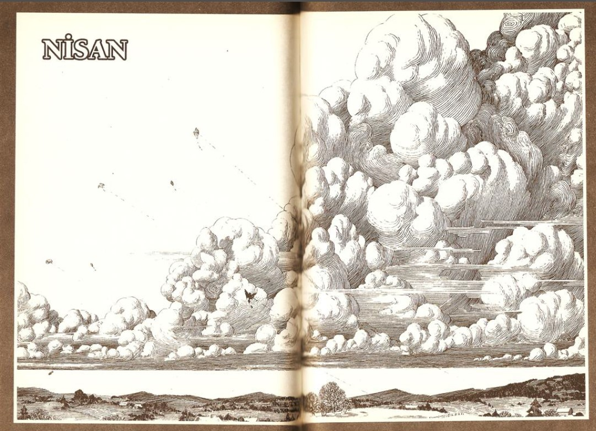
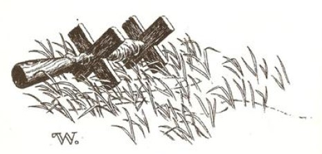
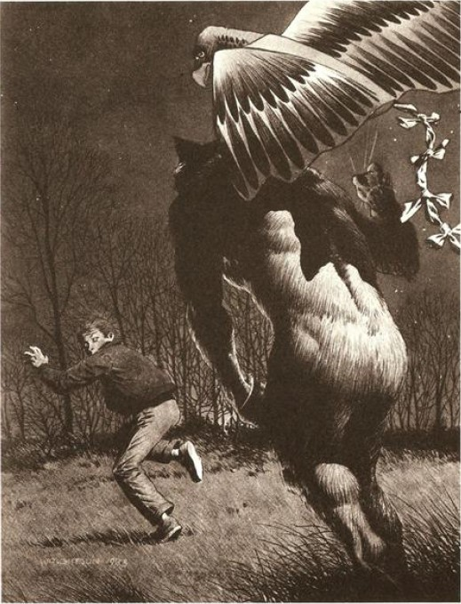

AYIN ORTASINA GELİNDİĞİNDE, kar fırtınalarının sonuncusu sağanak yağmurlara dönüştü, Tarker's Mills'de şaşırtıcı bir şey daha gerçekleşiyordu: kasaba yeşermeye başlamıştı. Matty Tellingham'ın inekleri için yaptığı havuzun buzları erimiş, Büyük Orman denilen ağaçlık bölgedeki kar birikintileri küçülmeye başlamıştı. Öyle görünüyordu ki şu eski ve harikulade mucize yeniden gerçekleşecekti. Bahar gelmekteydi.
Bölgenin üzerine çöken gölgeye rağmen, kasaba halkı baharı, küçük kutlamalarla karşılıyordu. Büyükanne Hague turta pişiriyor ve ardından soğusunlar diye mutfak penceresinin pervazına diziyordu. Pazar günü, Grace Baptist Kilisesi'nde Peder Lester Lowe, Süleyman Peygamberin İlahisi'nden bölümler okuyor ve “Tanrı Aşkı'nın Baharı" isimli bir vaaz veriyordu. Tarker's Mills'in en büyük ayyaşı olan Cris Wrightson, daha dünyevi bir şekilde Muhteşem Bahar Sarhoşluğu'nu bağıra çağıra söylüyor ve artık çok yaklaşmış durumdaki Nisan dolunayının düşsel gümüşi ışığına doğru sendeleyerek yürüyordu. Tarker's Mills'in tek barının barmeni ve sahibi olan Billy Robertson, Cris'in yürüyerek uzaklaşmasını seyretti ve servis yapan kıza dönüp sessizce mırıldandı, "Eğer kurt bu gece birini alacaksa, sanırım bu Chris olacak."
"Bu konuda konuşma" diye korkuyla titreyerek yanıtladı kız. Adı Elise Fourniet'di, yirmi dört yaşındaydı ve Grace Baptist Kilisesi'nin korosunda şarkı söylüyordu, çünkü Peder Lowe'u çok çekici buluyordu. Ama yaz geldiğinde bu kasabadan ayrılmayı planlamaktaydı, Peder etkileyici olsa da olmasa da, bu kurt davası onu korkutmuştu. Portsmouth'daki bahşişlerin daha iyi olabileceğini düşünmeye başlamıştı . . . oradaki kurtlar sadece denizci üniforması giyenlerdi.
O yıl, ay üçüncü kez yusyuvarlak olduğunda, Tarker's Mills'de geceler iyice huzursuz geçmeye başlamıştı . . . gündüzler daha iyiydi. Her öğleden sonra kasaba çayırının üzerinde, gökyüzünü dolduran uçurtmalar salınarak yükseliyordu.
On bir yaşındaki Brady Kincaid, doğum günü hediyesi olarak bir Akbaba uçurtması almıştı, uçurtmasının ipini elinin içinde sanki canlı bir şeymiş gibi tutuyordu ve uçurtmasının inip yeniden havalanışını, bando platformunun üzerinden gökyüzüne doğru yükselişe geçişini izlemekten aldığı zevk, çocuğun zamanın nasıl geçtiğini fark etmemesine yol açacaktı. Akşam yemeği için eve gitmeyi unutmuştu ve diğer uçurtmacıların kutu gibi ya da çadıra benzeyen veya alüminyum uçurtmalarını güvenli bir şekilde koltuk altlarına sıkıştırıp birer birer ayrıldıklarının farkında değildi, orada yapayalnız olduğunun farkında değildi.
Sonunda, ona çok fazla oyalandığını fark ettiren şey, yavaş yavaş solup giden gün ışığıyla birlikte büyüyen mavi gölgeler - ve parkın kenarındaki ormanın üzerinden ayın doğuşu - olacaktı. İlk kez olarak soğuk, beyaz bir ay yerine iyice büyümüş, turuncu renkli ılık bir ay vardı, ama Brady bunun da farkında değildi; farkına vardığı tek şey, sadece burada çok fazla oyalandığı ve babasından temiz bir sopa yiyeceğiydi... ve karanlık çöküyordu.
Geçen ay bir serserinin, ondan önceki ay Stella Randolph'un ve daha önceki ay da Arnie Westrum'un kurtadam tarafından öldürüldükleri hakkında okul arkadaşlarının anlattıkları hayal ürünü öykülere kahkahalarla gülmüştü. Ama şimdi gülmüyordu. Ay, Nisan alacakaranlığını kanlı bir ocak alevine dönüştürürken tüm öyküler fazlasıyla gerçek görünüyordu.
Gözleri kan kırmızısı Akbaba'yı, kararan gökyüzünden çekerek uçurtma ipini yumağa dolamaya çalıştı. Ama bu işi fazlasıyla hızlı yapıyordu ve rüzgâr aniden kesiliverdi. Sonuç olarak uçurtma bando platformunun arkasına hızla çakıldı.
Çocuk, yürüdükçe ipi yumağa sararak ve omzunun üzerinden arkaya tedirgin gözlerle bakmayı sürdürerek uçurtmaya doğru ilerliyordu... ve birdenbire ip çekilip ellerinin arasında oynamaya, testere gibi ileri geri hareket etmeye başladı. Bu durum, çocuğa Değirmenlerdin üzerinde Tarker's Çayı'nda büyük bir balık yakaladığı zaman oltasının oynayışım hatırlatmıştı. Kaşlarım çatarak ipe baktı, ip gevşiyordu.
Aniden sessizliği parçalayan kükreyiş geceyi doldurdu ve Brady Kincaid çığlıklar atmaya başladı. Şimdi inanıyordu, evet şimdi inanıyordu, tamam ama artık çok geçti ve çocuğun çığlığı, üşütücü bir değişimle ulumaya dönüşen bu ani hırıltılı kükreyişin altında kayboluyordu.
Kurt ona doğru koştu, iki ayağının üzerinde koşuyordu, karmakarışık tüylü postu ayın ateşiyle turuncuya boyanmıştı, göz kamaştıran yeşil lambalar gibiydi gözleri ve bir pençesinde - insan parmakları olan ama parmaklardaki tırnakların yerini pençelerin aldığı bir eldi - Brady'nin Akbaba uçurtması vardı. Uçurtma deli gibi çırpınıyordu.
Brady kaçmak için döndü ve soğuk kollar birdenbire onu karadı; kan ve tarçın gibi kokan bir şeyin kokusunu alıyordu ve bir sonraki gün, Savaş Anıtı'na dayanmış olarak bulundu, kafası yoktu, bağırsakları deşilmişti, uçurtması da artık katılaşmış olan elinde duruyordu.
Arama ekibi dehşete düşmüş ve alt üst olmuş bir halde geri dönerken uçurtma sanki gökyüzüne ulaşmaya çabalıyormuşçasına çırpmıyordu. Çırpmıyordu, çünkü hafif bir rüzgâr esmeye başlamıştı. Sanki bugünün uçurtmalar için iyi bir gün olacağını biliyormuş gibi çırpınıyordu.

